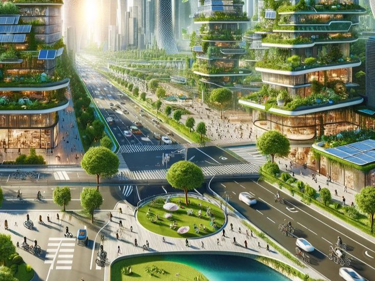
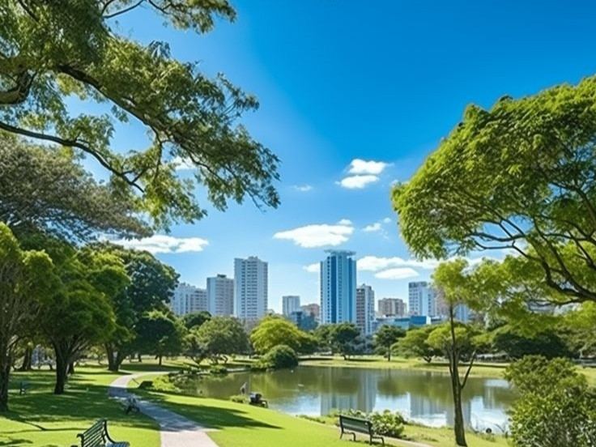
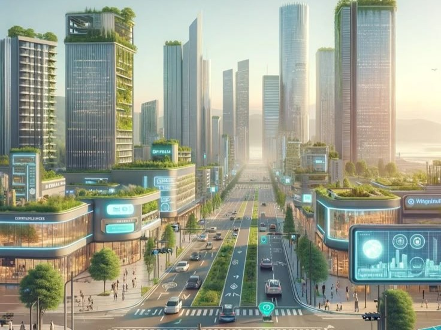
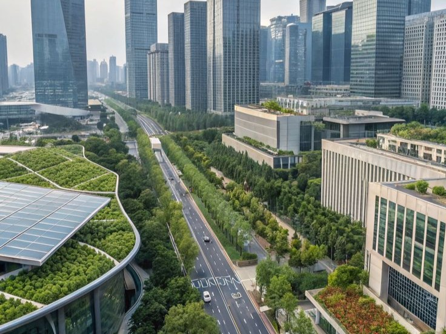

Construindo o futuro com responsabilidade
Investir em cidades sustentáveis é garantir que o futuro seja mais equilibrado, saudável e justo. Com o crescimento da população urbana, se torna essencial criar espaços que respeitem o meio ambiente e ofereçam qualidade de vida para todos.
A criação de cidades sustentáveis envolve energia limpa, transporte eficiente, reciclagem, construções inteligentes, áreas verdes e educação ambiental. Cada ação, por menor que seja, ajuda a transformar o ambiente urbano em um espaço melhor.
Proteger o meio ambiente é essencial para garantir recursos naturais, controlar a poluição e manter o equilíbrio do planeta. Quanto mais cuidamos da natureza hoje, mais garantimos um futuro seguro para as próximas gerações.




Imagens ilustrativas de cidades sustentáveis ao redor do mundo.
Caso o miniplayer não abra clique aqui.